In Week 1, I explored basic HTML structure, learning how to control layout, spacing, and text styling for the first time. This was my foundation for building cleaner, more intentional page designs later.
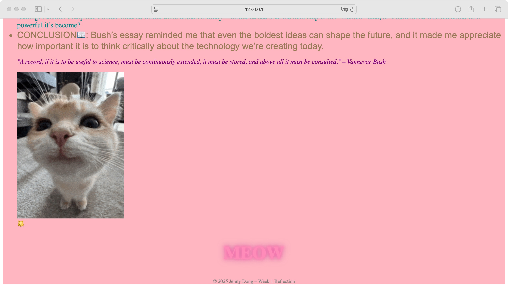In Week 2, I learned how to use colors, fonts, and backgrounds to create mood and express visual style. This helped me understand design choices beyond pure structure.
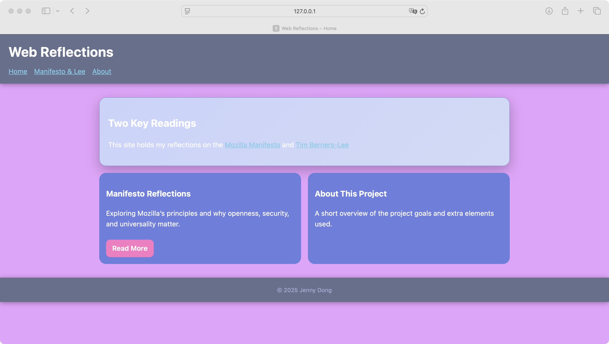Week 3 introduced more advanced CSS positioning. I learned how to layer images, align elements precisely, and start controlling page composition in a more creative way.
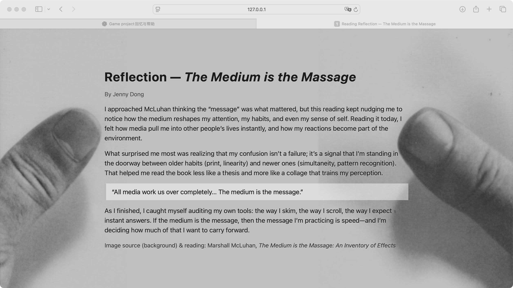 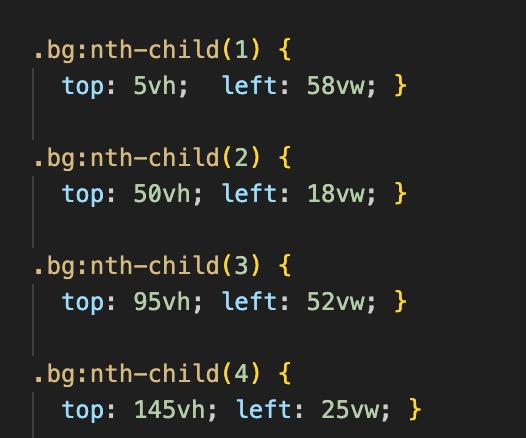In Week 4, I practiced combining images and text with fixed backgrounds, improving my ability to build visually consistent layouts. I also learned to clean up my CSS for better readability.
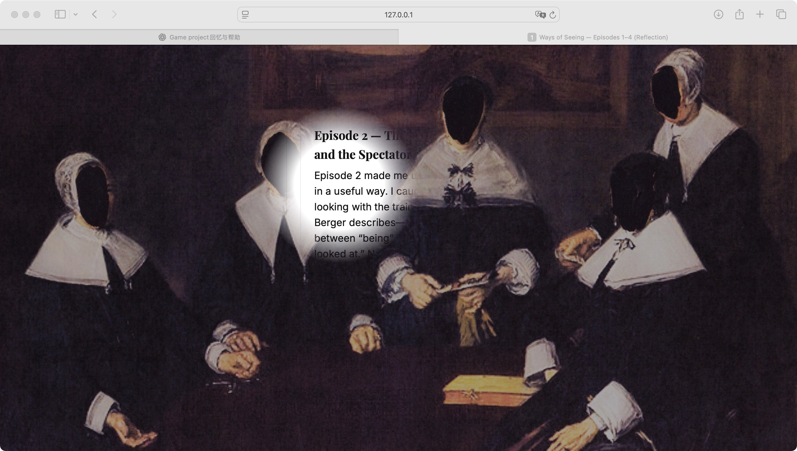 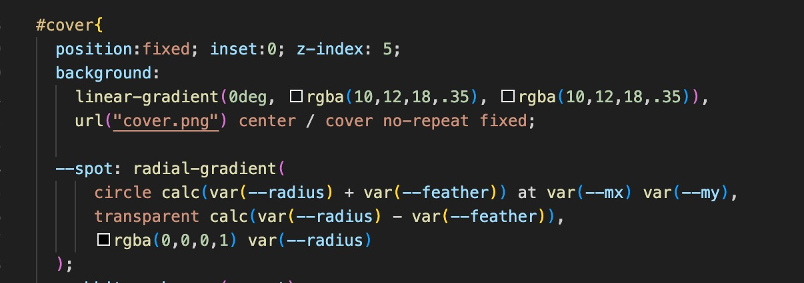In Week 5, I explored advanced CSS positioning and custom overlays. I learned how absolute positioning, transforms, and dynamic class changes can be combined to create drag-and-drop or layered interactive elements. This helped me gain confidence in building more complex visual interactions.
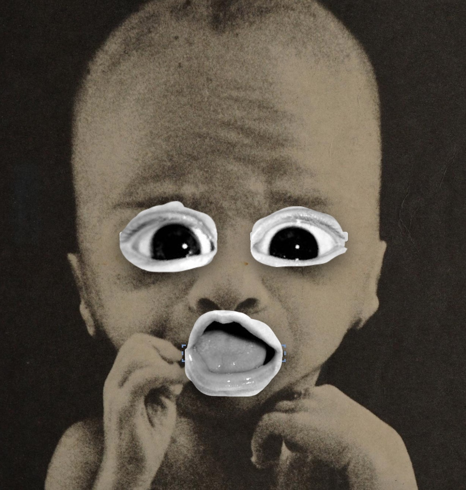 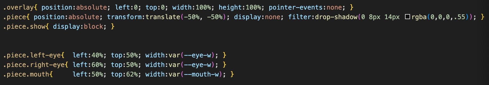In Week 5, I learned how to build interactive UI components using JavaScript event listeners. I implemented a working like-button system that toggles state and updates the like count dynamically, which improved my understanding of DOM scripting and state management.
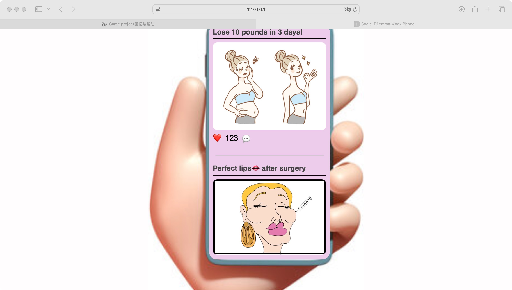 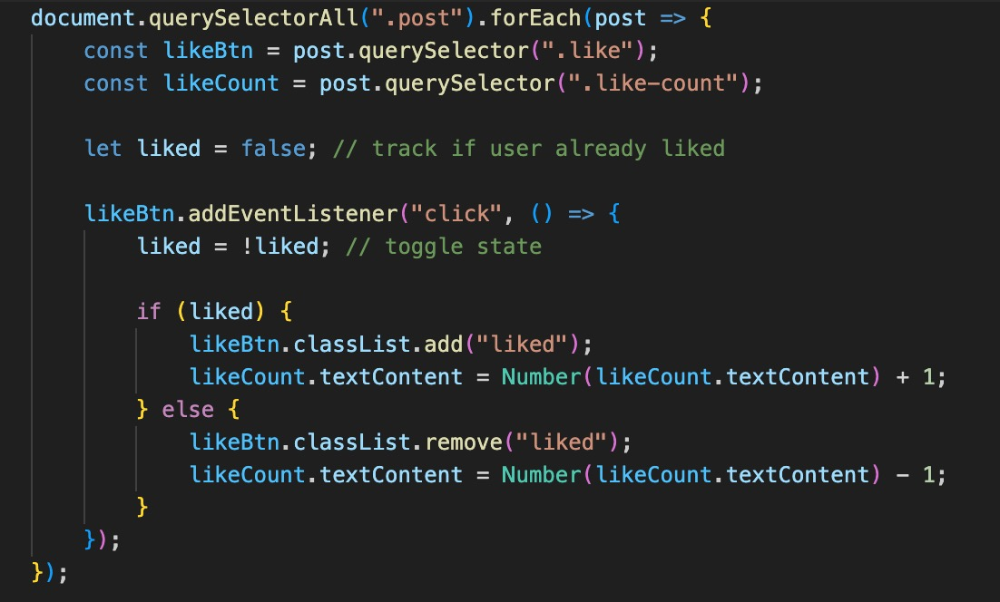In Week 7, I built a random text generator for a cyber-themed interactive page. This taught me how to use JavaScript loops, arrays, and randomness to create dynamic visual output, which improved my ability to combine creative visuals with functional logic.
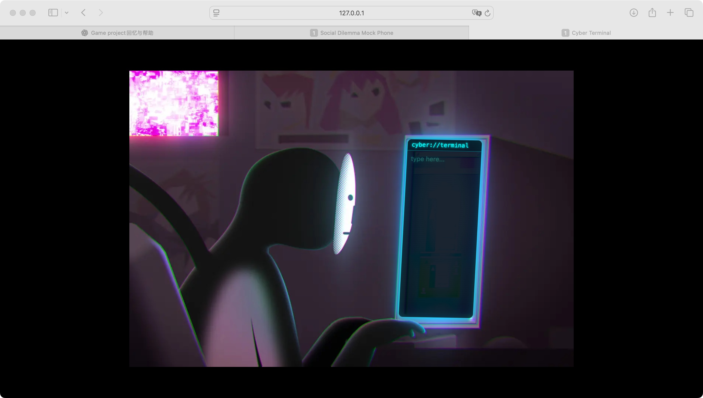 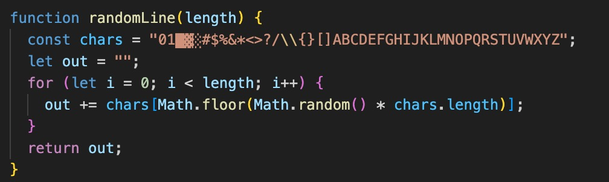